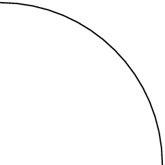
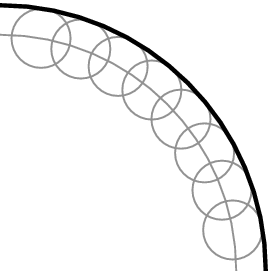

Application of the Huygens principle
Given the wavefront,

<code>
(0,0)(5,5)
\psarc(0,0){4}{0}{90}
</code>use the Huygens Principle to determine the wavefront at a later time.
Draw circles at various points along the given wavefront

<code>
(0,0)(5,5)
\psarc[linecolor=gray](0,0){4}{0}{90}
\pscircle(4;10){0.5}
\pscircle(4;20){0.5}
\pscircle(4;30){0.5}
\pscircle(4;40){0.5}
\pscircle(4;50){0.5}
\pscircle(4;60){0.5}
\pscircle(4;70){0.5}
\pscircle(4;80){0.5}
</code>Join the circle crests to get the wavefront at a later time

<code>
(0,0)(5,5)
\psarc[linecolor=gray](0,0){4}{0}{90}
\pscircle[linecolor=gray](4;10){0.5}
\pscircle[linecolor=gray](4;20){0.5}
\pscircle[linecolor=gray](4;30){0.5}
\pscircle[linecolor=gray](4;40){0.5}
\pscircle[linecolor=gray](4;50){0.5}
\pscircle[linecolor=gray](4;60){0.5}
\pscircle[linecolor=gray](4;70){0.5}
\pscircle[linecolor=gray](4;80){0.5}
\psarc[linewidth=2pt](0,0){4.5}{0}{90}
</code>